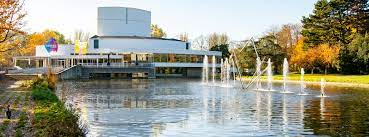
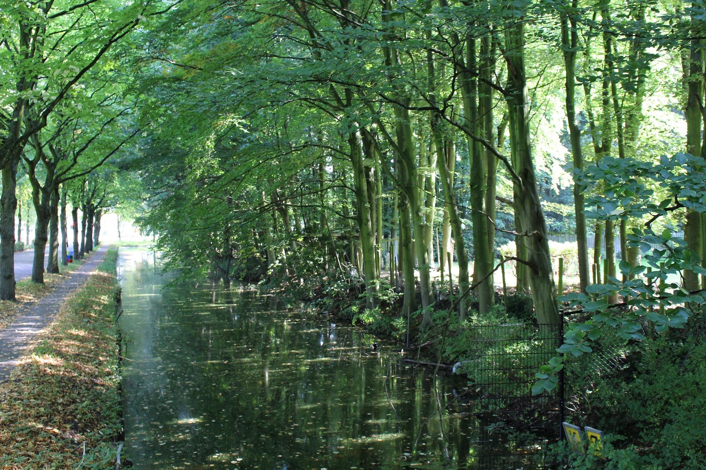

 De Rijswijkse Schouwburg bestaat sinds 1991. Het theater biedt jaarlijks een veelzijdig programma aan met aandacht voor onder meer cabaret, toneel, muziek, musical, dans en jeugd- en familievoorstellingen. De schouwburg beschikt over twee zalen: een grote zaal (700 bezoekers) en een kleine zaal (100 bezoekers). Waar in de grote zaal vrijwel alle theatergenres worden opgevoerd, is de kleine zaal met name bedoeld voor kleinkunst en (beginnende) cabaretiers en gezelschappen.
 In Rijswijk ligt tegen het oude centrum aan het kleine Rijswijkse bos. Je kunt er heerlijk wandelen, lekker op een bankje zitten en een bezoekje brengen aan Het Akkertje, een kinderboerderij die ook werk biedt aan mensen met een verstandelijke beperking. Je kunt er iets drinken en (bescheiden) eten.